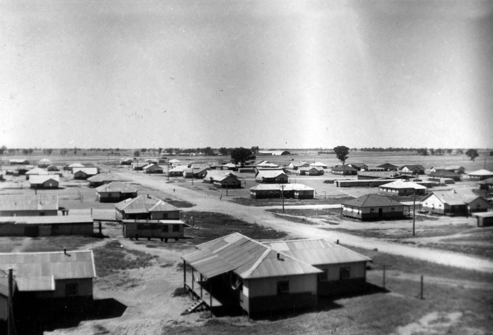
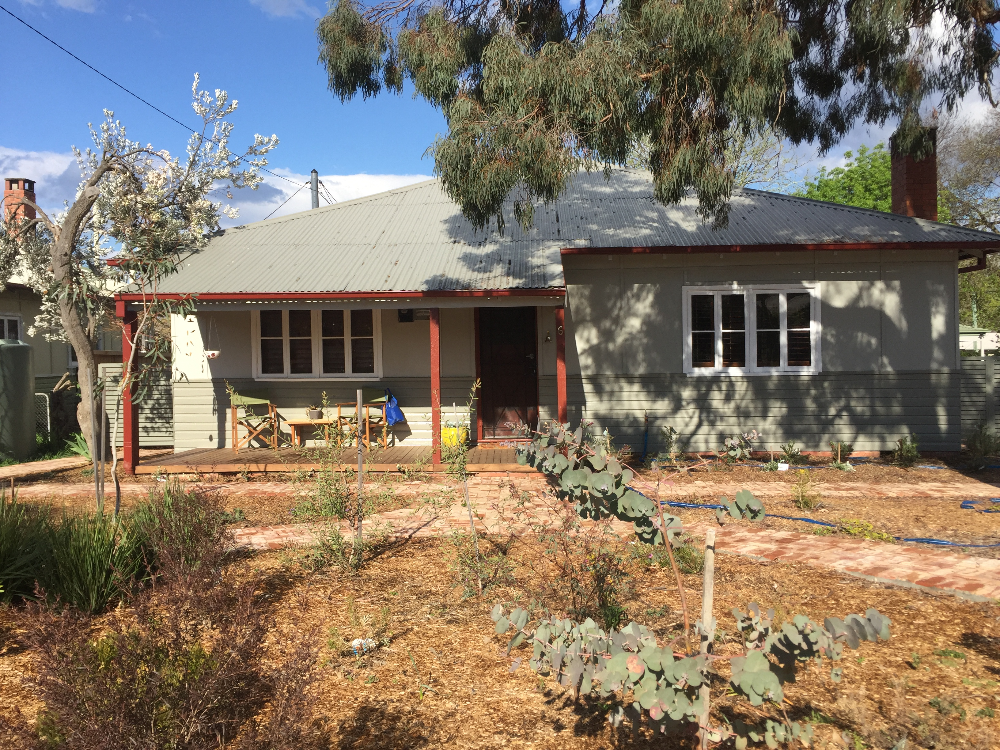

The story behind Canberra's historic suburb
The Tocumwal Archive
The new and growing population of Canberra included construction workers and workers in a wide range of service industries as well as transferred public servants. People from all these groups were on the Government housing list and when houses like the Tocumwals became available, getting somewhere to live was generally more important than location or style of house. The old Canberra hierarchies of status and position were not evident in the early years of the Tocumwal houses.
Heritage Listing
The new and growing population of Canberra included construction workers and workers in a wide range of service industries as well as transferred public servants. People from all these groups were on the Government housing list and when houses like the Tocumwals became available, getting somewhere to live was generally more important than location or style of house. The old Canberra hierarchies of status and position were not evident in the early years of the Tocumwal houses.
